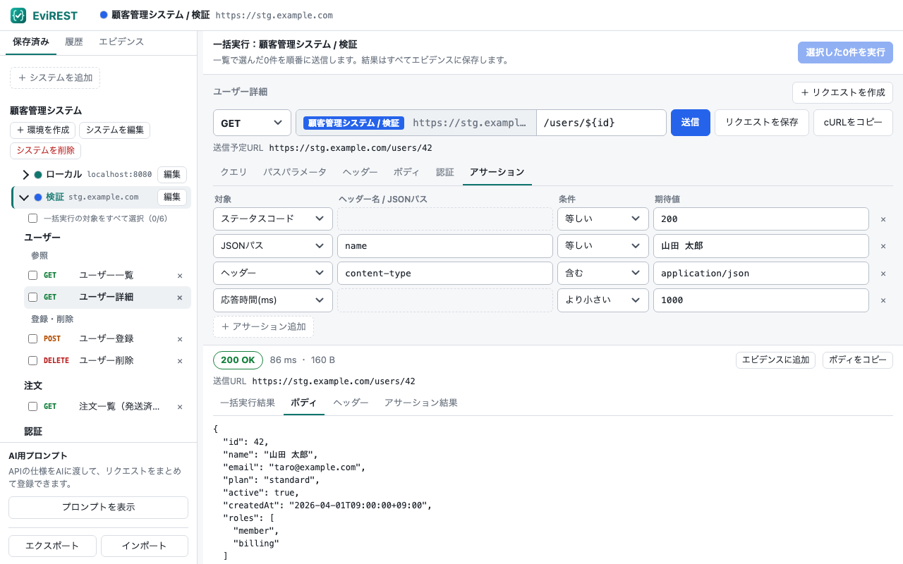
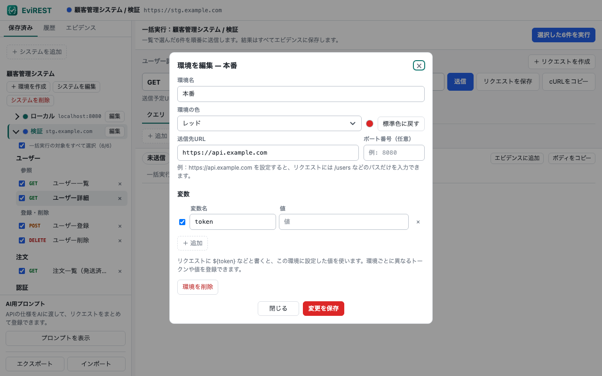
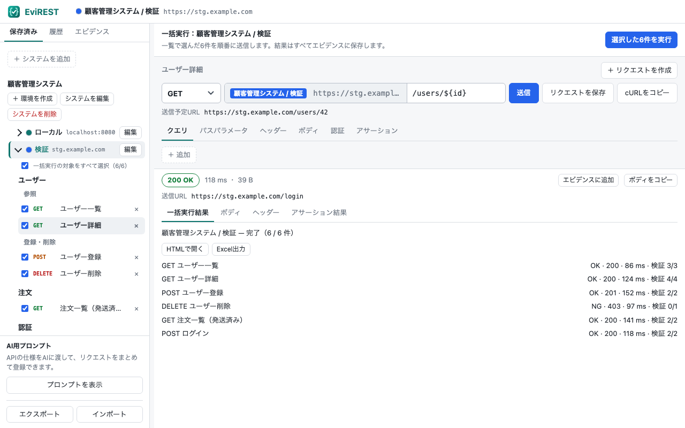
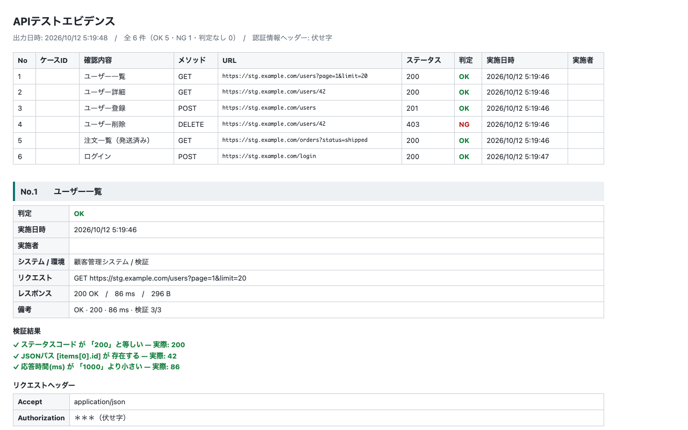

EviREST
EviREST
APIを送って、確かめて、
そのままエビデンスに。
EviRESTは、HTTP/REST APIの送信・アサーション・一括実行と、HTML・Excelのテストエビデンス出力をChromeだけで行えるAPIテスターです。
- アカウント登録不要
- データはブラウザ内だけに保存
- localhost・社内APIにも届く

テストの「やった証拠」まで、ひとつの画面で
リクエストを送るだけでなく、合否の判定と結果の記録までをまとめて行えます。
環境を選ぶだけで、送信先が切り替わる
ローカル・検証・本番などの環境ごとに、ベースURL・ポート番号・変数を設定できます。リクエストは一度保存すれば、すべての環境で使えます。
- URLやヘッダーに
${変数名}を書いて展開 - 環境ごとに色を付けて、本番への誤送信を防ぐ
- パッケージ・サブパッケージでリクエストを整理

アサーションで、送るたびに自動判定
ステータスコード、ヘッダー、ボディ、JSONパス、応答時間に検証条件を設定しておけば、送信のたびに合否を判定します。
- 等しい / 含む / 存在する / より小さい などの条件
- 失敗したら結果タブへ自動で切り替え
- チェックしたリクエストを順番に一括実行

HTML・Excelのテストエビデンスを出力
実行結果にテストケースID・確認内容・実施者・備考を付けて記録し、一覧と詳細をまとめたレポートを出力できます。
- HTMLレポートは印刷すると1件1ページ
- Excelは1枚目が一覧、以降は1件1シート
- Authorization などの認証ヘッダーは伏せ字に

現場のAPIテストに必要なものを
CORSの制約を受けない
拡張機能の権限で送信するため、localhostのサーバーや社内の検証用APIにもそのまま届きます。
主要なメソッドと認証
GET / POST / PUT / PATCH / DELETE / HEAD / OPTIONS / QUERY。Basic認証とBearerトークンに対応しています。
パスパラメータを自動抽出
/users/${id}
と入力すると、パラメータ欄が自動で追加されます。送信予定のURLも常に表示します。
cURLとしてコピー
作ったリクエストをcURLコマンドとしてコピーし、ターミナルや手順書にそのまま貼れます。
JSONで登録・共有
システム一式をJSONでエクスポート・インポート。チーム内でファイルを受け渡して同じ設定を使えます。
AIでリクエストをまとめて作成
付属のプロンプトとAPI仕様をAIに渡せば、取り込み用のJSONを作れます。拡張機能からAIへの自動送信はしません。
データは、あなたのブラウザから出ません
トークンや社内APIの情報を扱うツールだからこそ、外部に送らない設計にしています。
- 設定・認証情報・履歴・エビデンスは、利用中のブラウザ内にだけ保存
- 通信するのは、あなたが指定したAPIの送信先だけ
- アカウント登録、クラウド同期、アクセス解析、広告はありません
詳しくはプライバシーポリシーをご覧ください。
導入前に知っておいてほしいこと
EviRESTは、手作業のAPI確認とエビデンス作成に絞ったツールです。
向いている使い方
- 結合テスト・受け入れテストでのAPI確認
- テスト結果をExcelやHTMLで提出する必要がある
- localhostや社内環境のAPIを手早く叩きたい
- アカウントやクラウドを使えない環境
対応していないこと
- OAuth 2.0、ファイルアップロード（multipart）
- GraphQL、WebSocket、gRPC
- レスポンスの値を次のリクエストに引き継ぐ連鎖実行
- CLI・CIからの実行、Chrome以外での動作
対応範囲の詳細はGitHubのREADMEにまとめています。